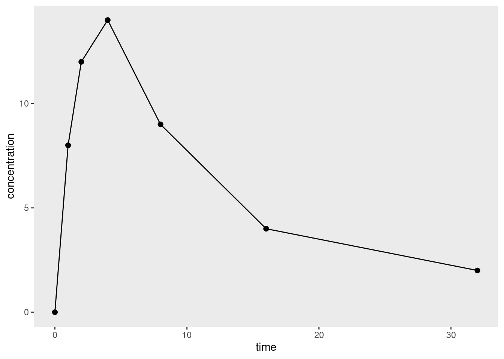
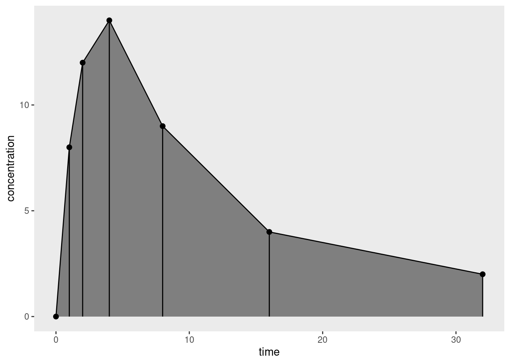
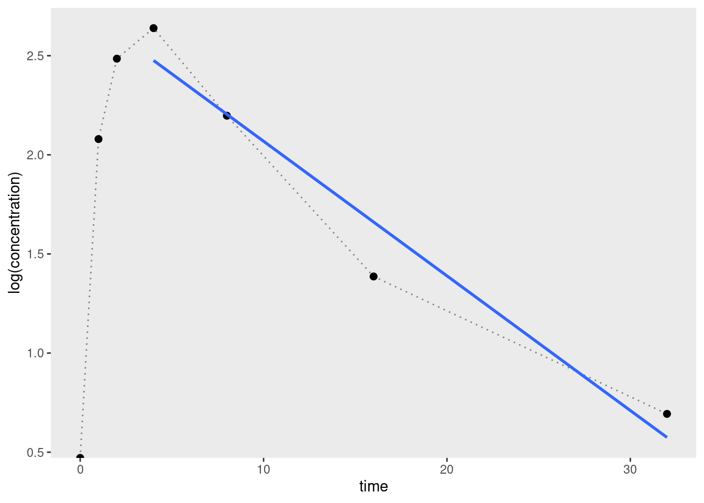
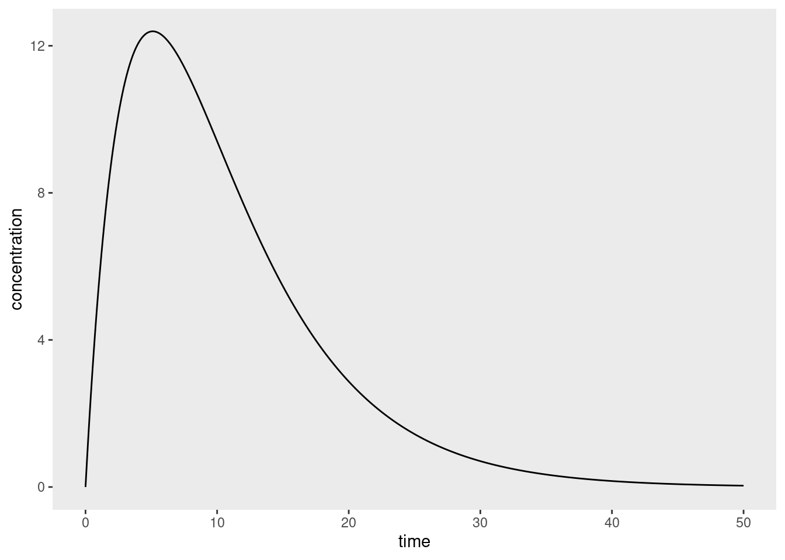
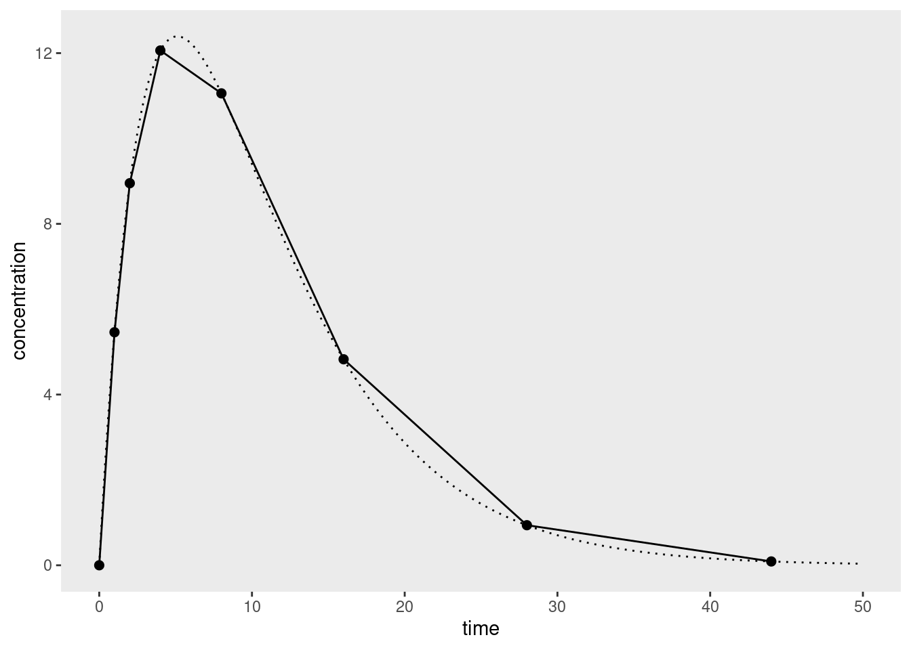

![]()

Back in my academic days, one thing that always made me sad about being “technically” a psychologist rather than a statistician or computer scientist is that it was always incumbent on my to use my technical skills in areas that would be of interest to behavioural scientists. As John Tukey once remarked, “The best thing about being a statistician is that you get to play in everyone’s backyard”. Fortunately for me, my academic backyard was quite large. On the applied side I had the opportunity to work in cognitive science, social psychology, forensic psychology, linguistics, and more, while still finding opportunities to write the occasional paper on machine learning or information theory. I even managed to find a way to play with quantum walks at one point.
Nevertheless, my envy persisted. There are so many other interesting things out there, and I never tire of learning new things. As such, I require very little pretext to start reading papers on… um… [checks notes]… statistical techniques in pharmacokinetics. Pharmacokinetics (PK) is a subfield of pharamacology that studies the concentrations of drugs and other substances over time when they are administered. Pharmacokinetic models are typically contrasted with (and sometimes paired with) pharmacodynamic (PD) models used to study the effect that drugs (and other substances) have on the organism. When these two things are paired – as you would often need to do if, say, you’d like to understand the behaviour of a new drug – it’s referred to as PK/PD modelling.1
A little background
To the surprise of exactly no-one who has experience with applied statistics, it turns out that there is quite a bit of nuance to pharmacometric analyses, and I’m only just starting to wrap my head around it all.2 To help make sense of it, let’s imagine a simple data set that looks like this when plotted:
It’s a very simple data set because we’re only looking at data from a single dose of some drug administered only to a single organism, and we’re measuring the concentration3 of that drug at several time points. This is quite sensibly referred to as a concentration-time curve.
Given data that take the form of one or more concentration-time curves, what kind of modelling strategy should you pursue? 4 5 As usual there are many choices an analyst needs to make, but one key distinction is between noncompartmental and compartmental analyses.
In a compartmental analysis, the statistician makes some (generally simplified) assumptions about the biological processes6 at play when a drug is administered, and estimates parameters using this model. For example, you might use a two-compartment model with a central compartment that corresponds to the circulatory system through which the drug is distributed, and a peripheral compartment corresponding to the body tissues to which the drug is delivered. The good thing about compartmental models is that they can provide a somewhat realistic description of what happens when a drug is administered. The bad thing is that it can be difficult to work out how to formulate the model correctly, with all the attendant worries about model misspecification. I’m not going to talk about these models in this post.
An alternative strategy – one that has complementary strengths and weaknesses to compartmental models – is to try to estimate quantities of interest (more or less) directly from the concentration-time curve. This approach is referred to as non-compartmental analysis (NCA), and it has the advantage of being simpler to implement, and as such inherits much of the robustness that comes from model simplicity.7
With that in mind it is useful to list some of the quantities of interest that are typically used in pharmacokinetic modelling. They vary a bit. Some of them are defined in a way that relates straightforwardly to the data. They’re things that you can directly measure, or they’re part of the study design, etc:
| Quantity | Notes | Symbol | Unit | Formula | Example |
|---|---|---|---|---|---|
| Dose | Amount of drug administered | \(D\) | mmol | (Design) | 500 mmol |
| Cmax | Peak plasma concentration of drug after administration | \(C_{max}\) | mmol/L | (Measured) | 60.9 mmol/L |
| tmax | Time taken to reach Cmax | \(t_{max}\) | h | (Measured) | 3.9h |
| Volume of distribution | Volume over which the drug is distributed | \(V_d\) | L | \(D/C_0\) | 6.0 L |
Not everything is that simple however. For example, the half-life parameters for absorption and elimination are not directly observable, and estimates of those quantities must be computed from other quantities:
| Quantity | Notes | Symbol | Unit | Formula | Example |
|---|---|---|---|---|---|
| Absorption half-life | The time taken for 50% of the dose to be absorbed into circulation | \(t_{ \frac{1}{2} a}\) | h | \(\ln(2) / k_a\) | 1.0 h |
| Elimination half-life | The time taken for the drug concentration to fall to 50% of its initial value | \(t_{ \frac{1}{2} e}\) | h | \(\ln(2) / k_e\) | 12 h |
Of course, when an uninitiated reader looks at these formulas, the first question they’d ask is “what the heck do the \(k_a\) and \(k_e\) quantities refer to? In a slightly circular fashion, we can extend the table somewhat and refer to these as the corresponding rate constant parameters for absorption and elimination:
| Quantity | Notes | Symbol | Unit | Formula | Example |
|---|---|---|---|---|---|
| Absorption rate constant | Parameterises the rate at which the drug enters into circulation | \(k_a\) | \(h^{-1}\) | \(\frac{\ln 2} {t_{\frac{1}{2}a}}\) | 0.693 h-1 |
| Elimination rate constant | Parameterises the rate at which the drug is eliminated from the body | \(k_e\) | \(h^{-1}\) | \(\frac{\ln 2} {t_{\frac{1}{2}e}} = \frac{CL}{V_d}\) | 0.0578 h-1 |
For the most part, these extra lines in our table don’t do much other than rephrase the last two… but there is something new here. One way of thinking about the underlying biology here is to suppose that the body has the capacity to “clean” or “clear” some volume of blood plasma per unit time. This is referred to as the clearance rate (denoted \(CL\) in the table).
Once we have the concept of a clearance rate \(CL\) – and implicitly, a concept of how it relates to the elimination rate constant \(k_e\) and volume of distribution \(V_d\) – we can start linking it to observable (or at least, estimable) quantities…
| Quantity | Notes | Symbol | Unit | Formula | Example |
|---|---|---|---|---|---|
| Area under the curve | Integral of the concentration- time curve | \(AUC\) | \(M s\) | \(\int_I C dt\) | 1,320 h mmol/L |
| Clearance rate | Volume of plasma cleared per unit time | \(CL\) | \(m^3/ s\) | \(V_d \ k_e = \frac{D}{AUC}\) | 0.38 L/h |
…where I’m being slightly imprecise here in the formula for the area under the curve, because I haven’t specified the interval \(I\) over which we should integrate. In the simplest case where as single dose is administered, the interval is generally taken to be \([0, \infty]\), and that is good enough for this post.8
At long last, we get to the point… you can think of the AUC as a kind of “total drug exposure” measure, but it’s not immediately obvious whether that’s a biologically meaningful quantity. However, it is naturally related to the clearance rate… which does have an inherent meaning from a biological perspective. And from this observation we arrive at the logic behind noncompartmental analysis. Instead of constructing a model of the process by which the body eliminates a drug, we instead aim to estimate AUC (and other quantities) from the observed data.9 10
Yay! Now we understand a minimal amount of the basic science. We know why the lovely pharma folks might want an estimate of AUC, and we can see why a nonparametric11 12 estimate of the AUC might useful to have.
A simple approach
How might we estimate this? The simplest approach would be to linearly interpolate between observations, and then compute the area under the resulting curve. Represented visually, area we would compute is the sum of the trapezoidal regions shown below:

For a single trapezoid defined by time values \(t_1\) and \(t_2\), at which concentration levels \(c_1\) and \(c_2\) are observed, the corresponding area is \((t_2 - t_1) (c_2 + c_1) / 2\), so applying the trapezoidal rule to the finite set of observations provides an approximation to the integral we care about, yielding a simple estimator for the area under the curve:
\[ AUC = \sum_{i=1}^{n-1} (t_{i+1} - t_i) \frac{c_{i+1} + c_i}{2} \]
where \(n\) denotes the total number of time points at which a measurement has been taken. To tidy the notation slightly I’ll let \(\Delta t_i = t_{i + 1} - t_i\), and thus
\[ AUC = \sum_{i=1}^{n-1} \Delta t_i \frac{c_{i+1} + c_i}{2} \]
That’s easy enough to implement as an R function:
auc <- function(time, conc) {
n <- length(time)
sum((time[-1] - time[-n]) * (conc[-1] + conc[-n]) / 2)
}This auc() function is incredibly limited, but it will suffice for now.13 Let’s say we have a data frame df that contains the data I used to draw the figure above:
df# A tibble: 7 × 2
time concentration
<dbl> <dbl>
1 0 0
2 1 8
3 2 12
4 4 14
5 8 9
6 16 4
7 32 2Then:
with(df, auc(time, concentration))[1] 186Using such calculated values of AUC I could then go on to calculate values for clearance, bioavailability, and more. Yay!
A concern about tails
In practice, a pharmacometrician wouldn’t calculate AUC the way I’ve just done it, for all sorts of reasons. To see why, I’ll let \(f(t)\) denote the true concentration-time curve, such that the observed concentration \(c_i\) at time \(t_i\) is given by
\[ c_i = f(t_i) + \epsilon_i \]
where \(\epsilon_i\) denotes the measurement errors that – purely for simplicity – I’ll pretend are i.i.d. with mean zero.14 By definition then, the true value of the AUC we seek to estimate is given
\[ \int_0^\infty f(t) \ dt \]
which we can decompose into the sum of two definite integrals, one taken over the range of times for which we have data \([t_1, t_n]\) where \(t_1 = 0\), and the other corresponding to the tail area \([t_n, \infty]\)
\[ \int_{t_1}^{t_n} f(t) \ dt + \int_{t_n}^{\infty} f(t) \ dt \]
It doesn’t take a lot of work to notice that the AUC that we calculate is a numerical approximation to the first term only.15 16 17 Unless we have designed our study such that the concentration \(c_n\) is effectively zero at the final time point \(t_n\), we’re going to end up with an estimate of the AUC that systematically underestimates the true value. Given that AUC is used as a measure of “total drug exposure” and is rather important for estimating other important quantities, we’d prefer to avoid that, but in order to do so we might have to – gasp! – start using our knowledge of the domain to make some assumptions.
Making sensible assumptions
At this point it’s useful to consider the reasons why the curve I’ve used as my toy data set starts at zero, rises to a maximum concentration after a moderate amount of time, and then smoothly decreases afterwards. This pattern might be observed from a drug administered orally. At the time of administration the blood plasma concentration of the drug will be zero because it hasn’t yet been absorbed into systemic circulation – because bodies have that pesky gastrointestinal system that has to do its job before ingested substances pass into the bloodstream. In other words, at the beginning the absorption process is the main factor at play, and blood concentration rises. Later on, however, once the substance has been (mostly) absorbed the situation changes, and it’s the elimination process that dominates: drug concentration falls as the kidneys etc do their job and clear it from the system. For a drug administered intravenously, however, the situation is going to be a little different because we bypass the absorption process: the plasma concentration starts at its maximum value and falls steadily as the elimination process takes place.
Given all this let’s return to NCA estimate of AUC, and think about what happens in the tails. Assuming we have designed our study sensibly, the last time point \(t_n\) will be chosen so that absorption (if relevant) is substantially complete, and the blood concentration is falling: when estimating the tail area, it’s not unreasonable to assume that elimination is the only process in play, and that the body is able to clear some fixed volume of blood (i.e., the clearance, CL) per unit time. Or, to put it another way, for the purposes of estimating the tail area, we’ll use a one-compartment bolus model that assumes drug concentrations over time follow an exponential decay:18
\[ c(t) = c_0 \ e^{-k_e t} \]
where \(c_0\) refers to the initial concentration and \(k_e\) is the elimination rate constant discussed earlier in the post. To be slightly more precise, we take the final observed concentration \(c_n\) to be our starting concentration, and then assume that the remaining time course of elimination produces an exponential decay, giving us this as our estimate of the tail area:
\[ \int_{t_n}^{\infty} c_n \ e^{-k_e (t - t_n)} \ dt = \frac{c_n}{k_e} \]
That’s nice and neat, except for one small problem: we don’t actually know the value of \(k_e\). Fortunately, since we’re assuming that the concentration-time curve is exponential in the tail, we expect that a plot of log concentration against time will be linear for the later time points. Better yet, per the one-compartment bolus model, the slope of this plot will give us an estimate of \(k_e\):
\[ \ln c(t) = -k_e t + \ln c_0 \]
In a truly shocking turn of events, when we plot the entirely made-up data I’ve used for this post on a logarithmic scale, we see precisely the expected pattern:

Expressed as R code, we can estimate the elimination rate constant by regressing log concentration against time for the final few data points (about 3 or 4 is considered okay) and using the slope19 as our estimate:
-lm(log(concentration) ~ time, df[4:7, ])$coef[2] time
0.06791393 So we could refine our auc() function as follows:
auc <- function(time, conc, tail_n = 4) {
n <- length(time)
tail_points <- (n - tail_n + 1):n
auc_body <- sum((time[-1] - time[-n]) * (conc[-1] + conc[-n]) / 2)
k_e <- -lm(log(conc[tail_points]) ~ time[tail_points])$coef[2]
auc_tail <- unname(conc[n] / k_e)
auc_body + auc_tail
}Applying it to the toy data set, we can see that the estimated AUC has increased quite considerably:
with(df, auc(time, concentration))[1] 215.449That’s not entirely surprising, given that I deliberately created a toy data set where the plasma concentration was still relatively high at the final time point.
Further refinement
My goal in this post was very modest: all I really wanted to do was wrap my head around some core concepts in pharmacokinetics and implement a simple analytic method. It’s worth noting, however, that in real life there are further refinements to NCA that are usually considered. For example, in order to construct an estimate of the tail area I relied on some sensible assumptions (exponential decay) about the shape of the underlying pharmacokinetic function. That’s very sensible, but there’s nothing stopping us making use of the same ideas to refine the estimate of the “AUC body” as well as the “AUC tail”. Using the trapezoid rule (linear interpolation) to construct our estimate makes sense if we have no idea whether the function is concave or convex at a particular point in the curve. But, as the plot below illustrates, this method systematically underestimates concave areas, and overestimates convex areas.
Suppose, for example, that instead of a one-compartment bolus model, the pharmacokinetics of our drug are better described by a Bateman curve that arises if one assumes a constant rate of absorption and a constant rate of elimination:
\[ c(t) = \frac{F \times D \times k_a}{V_D (k_a - k_e)} \left( e^{-k_e t} - e^{-k_a t} \right) \] In this expression \(F\) denotes the bioavailability (fraction of the drug that gets absorbed, e.g., 0.8), \(D\) is the dose (e.g., 200mmol), and \(V_D\) is the volume over which the drug is distributed (e.g. 6L). This kind of system gives us pharmacokinetic profiles that look like this:20

Now suppose we measured this function at a few data points and used the trapezoid rule to estimate the integral:

Notice that there are systematic (and non-trivial) overestimates on the right side of the curve where the concentrations are decaying exponentially but the estimator is interpolating linearly. The corresponding underestimates on the left hand side – where the curve is concave – are smaller because we’ve designed the study to measure more frequently early on (which is sensible). Because these overestimates tend to occur in the part of the curve where the elimination process dominates, there are variations of non-compartmental AUC calculations that use nonlinear interpolation for those parts of the concentration-time curve.21 However, I’m not going to dive into that in this post, since I wanted to keep the discussion as simple as possible.
I am sure you are all deeply thrilled to hear that.
Footnotes
The specific discipline that refers to the formal modelling aspect to pharmacology is called pharmacometrics.↩︎
Whenever learning a new thing I try to force myself to be the precise opposite of this person.↩︎
Typically the blood plasma concentration, which might be something like mass concentration but of course doesn’t have to be. The plots I’m using in this post don’t bother to specify units because I’m not doing that deep a dive yet, but obviously that would… um… matter quite a lot in real life. One should not confuse mass concentration with molar concentration or volume concentration etc etc. So much undergraduate chemistry coming back to me as I write this… it’s kind of fun.↩︎
Realistically you’d expect to obtain more than one such curve in a real study, and as such you have all the usual issues around aggregating data from possibly-heterogeneous sources. This line of thought leads you naturally to considering population pharmacokinetics, and there will be exactly zero statisticians surprised to learn that this leads you to thinking about mixed models (see, for example, this lovely talk by Joseph Standing. I’m not going to get to that in this post but I did start reading about some of the models used for this purpose and, not gonna lie, they look like fun.↩︎
I mean, this morning I discovered the PKPDposterior R package that provides Stan wrappers for Bayesian PKPD models and am awfully excited to play with it at a later point.↩︎
I’m still learning my way around the territory here but even I can see that when constructing a specific model you’ll likely want to think about processes of absorption, distribution, metabolism, and elimination (ADME).↩︎
This simplicity also makes it an attractive place for me to start learning about a new field. Learning a new discipline always requires learning the terminology and notation, understanding the assumptions and practices, and so on. I find it much easier to wrap my head around those things in the context of a comparatively-simple statistical technique rather than attempting to do the same thing in the context of a more complex one.↩︎
In more complex cases where a steady state is reached (e.g., when doses are administered at regular intervals, eventually the concentration-time curve becomes periodic and the system is in dynamic equilibrium), the interval is computed from some time \(t\) after the steady state is reached, to some time \(t+\tau\).↩︎
Okay, fine, I confess I am oversimplifying here. Noncompartmental analysis is somewhat more general than this. For the purposes of this post I’m restricting myself to thinking about the area under the concentration-time curve, but as noted in review papers (e.g., Gabrielsson & Weiner 2012) there are other curves to which you can apply much the same logic. For example, if you plot the first moment (concentration x time) against time and compute the area under that curve (typically denoted AUMC), you can use this to estimate other quantities that pharmacometricians care about. That being said, I’m not going to go into that here.↩︎
Slightly confusingly, it appears to be a convention in the literature that, unless otherwise stated, “AUC” refers specifically to the area under the concentration-time curve. Per the previous footnote, the area under the first moment curve is referred to as the “AUMF”. I’d complain about this imprecision, but I too have worked as a research scientist. I am acutely aware that “AUC” also has an equally-confusing default meaning in psychology – in that context, “AUC” is almost always taken to refer to the area under the receiver operating characteristic curve, because signal detection theory often lies in the background as an unstated assumption. Sigh. Science is a cruel mistress.↩︎
I hate that word. Seriously. If you’re not a statistician, but happen to know a devout frequentist and a devout Bayesian, gather the two of them together and ask them what “nonparametric” means. Then, measure the size of the resulting mushroom cloud. It’s an empty term that doesn’t mean anything. But whatever. The reason I use it here has fuck all to do with Bayesian/frequentist squabbles, and everything to do with the fact that we are deliberately trying our best not to construct a model that makes strong theoretical assumptions. My statistical logic for thinking of this as “nonparametric” follows naturally from the scientific logic for calling it “noncompartmental”.↩︎
On top of that, there’s the fact that as soon as one moves past the simplest possible approach, we actually do start making some assumptions about the structure of the concentration-time curve, partially expressing it in terms of a low dimensional model, so there is a sense in which “nonparametric” is a bit misleading. Whatever. I’m not entirely convinced that terminology was ever very helpful.↩︎
I’ll talk about its limitations from a statistical perspective in a moment, but it’s worth noting that assumes the observations are ordered chronologically, and I’ve not bothered with input checking or anything that I’d want to do in real life to prevent accidental misuse. But that’s not the point of the post and I’m getting off track.↩︎
Or, more precisely, I’m simply going to ignore them for now. I promise I am not this sloppy when working professionally but honestly right now I’m focusing on learning the basics.↩︎
I did briefly consider writing something more detailed about this point but it’s sort of silly: the trapezoid rule for numeric integration is the average of the left and right Riemann sums, so if we’re assuming that \(f()\) is a Riemann-integrable function, it’s pretty clear that the thing we’re doing here is employing a well-established method for numerically approximating the area under the curve, but only measured up to the last observed time point.↩︎
We could go slightly further in this hypothetical analysis that I didn’t bother with and show that under a simple design where we sample the values of \(t\) in such a way that as \(n \rightarrow \infty\) the longest time interval also goes to infinity \(t_n \rightarrow \infty\), this method will produce an asymptotically consistent estimator for the true AUC. But, honestly, who cares? Asymptotic consistency is the coldest of cold comforts, and guarantees very little in practice. There’s a good reason why pharmacometricians prefer methods that attempt to estimate the tail area in the pre-asymptotic (i.e., real world) scenario.↩︎
The reason, of course, being that they are not idiots and they care about making sensible inferences.↩︎
I suppose this is one of those models that is so widely used that it’s almost weird to cite, but for what it’s worth I’ve found Holz & Fahr (2001) to be a nice introduction to compartment modelling.↩︎
Well, -1 times the slope, but whatever.↩︎
Okay yes my toy data set does look rather like a Bateman curve. In truth I made up the values intuitively, but I’m amused to see that they closely adhere to a model that I hadn’t yet read about when I created the data.↩︎
One question that I haven’t yet found the answer for is the one that pops up when you look at the curve above: there’s a systematic underestimate that occurs when you don’t have many data points near the peak concentration. In that region the curve is concave. Intuitively it seemed to me that if you’re going to apply corrections in regions where you are pretty sure the curve is convex, it might be wise to do similarly in regions where you’re pretty sure it’s concave. I imagine there’s an answer to this in the literature somewhere.↩︎
Reuse
Citation
BibTeX citation:
@online{navarro2023,
author = {Navarro, Danielle},
title = {Non-Compartmental Analysis},
date = {2023-04-26},
url = {https://blog.djnavarro.net/posts/2023-04-26_non-compartmental-analysis},
langid = {en}
}
For attribution, please cite this work as: